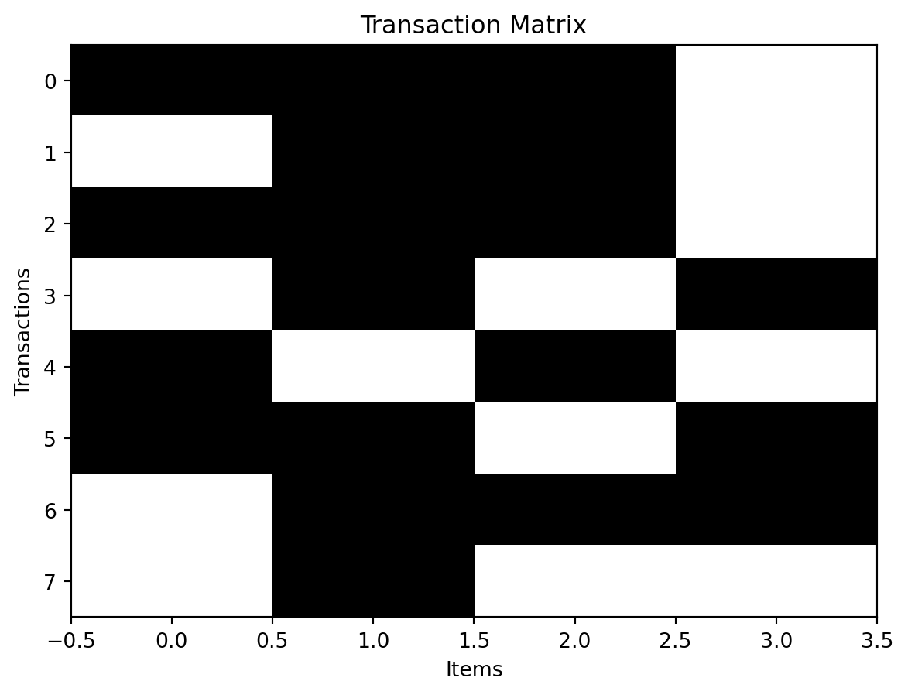
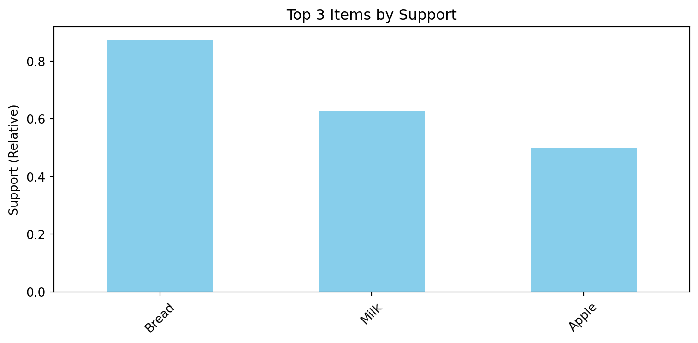

import numpy as np
import pandas as pd18 Association Rules
Association rule learning (often referred to simply as association rules) is a rule-based unsupervised learning technique designed to uncover meaningful patterns or regularities within large datasets. It is particularly popular in market basket analysis, where the goal is to identify items that are frequently purchased together by customers.
In essence, this method discovers relationships between variables (items) in a transactional dataset, using key evaluation metrics such as:
- Support: The proportion of transactions that contain a given itemset.
- Confidence: The conditional probability that a transaction containing itemset A also contains itemset B.
- Lift: The ratio of observed co-occurrence of A and B to the expected co-occurrence if A and B were independent.
These metrics together quantify how frequent, reliable, and non-random a rule is.
18.1 Data Preparation
For ease of handling data, transactional data are often stored in a tabular form (e.g., CSV), and data structures may differ with different definitions of rows and columns:
- Case 1: Each row corresponds to one matching of two columns’ values for a transaction ID and an item.
- Case 2: Each row corresponds to one transaction and each column represents a possible item position.
- Case 3: Each row corresponds to one transaction and each column contains any item of the transaction or empty cells (missing values) denoted as
NaN.
# Case 1
trs1_dict = {
'ID': ['r1', 'r1', 'r1', 'r2', 'r2', 'r3', 'r3', 'r3', 'r4', 'r4', 'r5', 'r5', 'r6', 'r6', 'r6', 'r7', 'r7', 'r7', 'r8'],
'Item': ['Milk', 'Bread', 'Apple', 'Milk', 'Bread', 'Milk', 'Bread', 'Apple', 'Bread', 'Nuts', 'Milk', 'Apple', 'Bread', 'Apple', 'Nuts', 'Milk', 'Bread', 'Nuts', 'Bread'],
}
trs1_df = pd.DataFrame(trs1_dict)
trs1_df.head(5)| ID | Item | |
|---|---|---|
| 0 | r1 | Milk |
| 1 | r1 | Bread |
| 2 | r1 | Apple |
| 3 | r2 | Milk |
| 4 | r2 | Bread |
# Case 2
trs2_dict = {
'ID': ['r1', 'r2', 'r3', 'r4', 'r5', 'r6', 'r7', 'r8'],
'ItemList': [
['Milk', 'Bread', 'Apple'],
['Milk', 'Bread'],
['Milk', 'Bread', 'Apple'],
['Bread', 'Nuts'],
['Milk', 'Apple'],
['Bread', 'Apple', 'Nuts'],
['Milk', 'Bread', 'Nuts'],
['Bread'],
]
}
trs2_df = pd.DataFrame(trs2_dict)
trs2_df.head(5)| ID | ItemList | |
|---|---|---|
| 0 | r1 | [Milk, Bread, Apple] |
| 1 | r2 | [Milk, Bread] |
| 2 | r3 | [Milk, Bread, Apple] |
| 3 | r4 | [Bread, Nuts] |
| 4 | r5 | [Milk, Apple] |
# convert trs1 into trs2
trs1_df.groupby('ID')['Item'].apply(list).reset_index(name='ItemList')| ID | ItemList | |
|---|---|---|
| 0 | r1 | [Milk, Bread, Apple] |
| 1 | r2 | [Milk, Bread] |
| 2 | r3 | [Milk, Bread, Apple] |
| 3 | r4 | [Bread, Nuts] |
| 4 | r5 | [Milk, Apple] |
| 5 | r6 | [Bread, Apple, Nuts] |
| 6 | r7 | [Milk, Bread, Nuts] |
| 7 | r8 | [Bread] |
# convert trs2 into trs1
trs2_df.explode('ItemList').rename(columns={'ItemList': 'Item'}).reset_index(drop=True)| ID | Item | |
|---|---|---|
| 0 | r1 | Milk |
| 1 | r1 | Bread |
| 2 | r1 | Apple |
| 3 | r2 | Milk |
| 4 | r2 | Bread |
| 5 | r3 | Milk |
| 6 | r3 | Bread |
| 7 | r3 | Apple |
| 8 | r4 | Bread |
| 9 | r4 | Nuts |
| 10 | r5 | Milk |
| 11 | r5 | Apple |
| 12 | r6 | Bread |
| 13 | r6 | Apple |
| 14 | r6 | Nuts |
| 15 | r7 | Milk |
| 16 | r7 | Bread |
| 17 | r7 | Nuts |
| 18 | r8 | Bread |
# Case 3
trs3_list = [
['Milk', 'Bread', 'Apple'],
['Milk', 'Bread'],
['Milk', 'Bread', 'Apple'],
['Bread', 'Nuts'],
['Milk', 'Apple'],
['Bread', 'Apple', 'Nuts'],
['Milk', 'Bread', 'Nuts'],
['Bread'],
] # trs2_dict['ItemList']
trs3_df = pd.DataFrame(trs3_list)
trs3_df.head(5)| 0 | 1 | 2 | |
|---|---|---|---|
| 0 | Milk | Bread | Apple |
| 1 | Milk | Bread | None |
| 2 | Milk | Bread | Apple |
| 3 | Bread | Nuts | None |
| 4 | Milk | Apple | None |
# convert trs3 into trs2
pd.DataFrame({
'ID': [f'r{i+1}' for i in range(len(trs3_df))],
'ItemList': [tran[~pd.isnull(tran)] for tran in trs3_df.values]
})| ID | ItemList | |
|---|---|---|
| 0 | r1 | [Milk, Bread, Apple] |
| 1 | r2 | [Milk, Bread] |
| 2 | r3 | [Milk, Bread, Apple] |
| 3 | r4 | [Bread, Nuts] |
| 4 | r5 | [Milk, Apple] |
| 5 | r6 | [Bread, Apple, Nuts] |
| 6 | r7 | [Milk, Bread, Nuts] |
| 7 | r8 | [Bread] |
18.1.1 Convert to Transaction Format
Before applying an algorithm (i.e., Apriori) for association rule analysis, let’s convert the transaction list into a frequency table (a Boolean matrix) format where:
- Each row corresponds to a transaction.
- Each column represents an item (in an order).
- Each entry indicates whether the item appears in the transaction (
TrueorFalse).
Let’s begin by defining a list of transactions, where each transaction represents a set of items purchased together. Each inner list in the following example represents one transaction, and the elements are items within that transaction.
# transaction list
transactions = trs2_dict['ItemList']
transactions[['Milk', 'Bread', 'Apple'],
['Milk', 'Bread'],
['Milk', 'Bread', 'Apple'],
['Bread', 'Nuts'],
['Milk', 'Apple'],
['Bread', 'Apple', 'Nuts'],
['Milk', 'Bread', 'Nuts'],
['Bread']]To create a frequency table and frequency plot, we can use the TransactionEncoder() in the package mlxtend1 and its fit_transform method.
from mlxtend.preprocessing import TransactionEncoder
encoder = TransactionEncoder() # create the encoder
coded_trans = encoder.fit_transform(transactions) # apply the transformation
print("Type:", type(coded_trans), '\n') # NumPy array (n_transactions, n_unique_items)
print(coded_trans)Type: <class 'numpy.ndarray'>
[[ True True True False]
[False True True False]
[ True True True False]
[False True False True]
[ True False True False]
[ True True False True]
[False True True True]
[False True False False]]The result is a NumPy boolean array, where each element indicates the presence or absence of an item in a given transaction.
18.1.2 Retrieve Encoded Item Information
The resulting Boolean matrix is useful to explore its basic properties.
# (no. transactions, no. unique items)
n_transactions, n_items = coded_trans.shape
print(f"No. transactions = {n_transactions}, \tNo. items = {n_items}")No. transactions = 8, No. items = 4The fitted encoder stores the names of all unique items in alphabetical order by default. You can access the list of column names and the corresponding index mapping as follows:
print(encoder.columns_) # a sorted list of item names
print(encoder.columns_mapping_) # a mapping dictionary for item names and column indices['Apple', 'Bread', 'Milk', 'Nuts']
{'Apple': 0, 'Bread': 1, 'Milk': 2, 'Nuts': 3}18.1.3 Visualize Transaction Patterns
The encoded structure for the transaction–item relationships can be visualized by using a binary image representation. Each cell in the plot corresponds to whether an item (x-axis) appears in a transaction (y-axis).
This simple visualization helps identify frequent co-occurrences and sparsity patterns within the dataset before proceeding to the Apriori algorithm for mining frequent itemsets.
import matplotlib.pyplot as plt
plt.imshow(coded_trans, aspect='auto', cmap='Greys')
plt.title("Transaction Matrix")
plt.xlabel("Items")
plt.ylabel("Transactions")
plt.show()
This simple visualization helps identify frequent co-occurrences and sparsity patterns within the dataset before proceeding to the Apriori algorithm for mining frequent itemsets.
18.2 Association Rules
Once the transactions have been encoded, we can proceed with the association rule mining process. This involves
- identifying frequent itemsets (combinations of items that co-occur often) and
- deriving association rules that capture how the presence of certain items implies the occurrence of others.
18.2.1 Frequency of Single Items
For easy of handling the data, let’s keep the encoded data in a pandas.DataFrame.
df_trans = pd.DataFrame(coded_trans, columns=encoder.columns_)
print(df_trans.head()) Apple Bread Milk Nuts
0 True True True False
1 False True True False
2 True True True False
3 False True False True
4 True False True FalseThe absolute support of each item (i.e., the number of transactions in which it appears) can be computed using sum():
# Absolute support (frequency)
df_trans.sum().sort_values(ascending=False)Bread 7
Milk 5
Apple 4
Nuts 3
dtype: int64Similarly, the (relative) support (i.e., the proportion of transactions that contain each item) can be calculated using the mean():
# Relative support (frequency proportion)
df_trans.mean().sort_values(ascending=False)Bread 0.875
Milk 0.625
Apple 0.500
Nuts 0.375
dtype: float64
Note
The relative support can also be obtained manually by dividing the absolute frequency by the total number of transactions:
# Relative support manually computed
df_trans.sum().sort_values(ascending=False) / df_trans.shape[0]Bread 0.875
Milk 0.625
Apple 0.500
Nuts 0.375
dtype: float6418.2.1.1 Bar Plot of Frequent Items
To visualize item popularity through frequencies, we can plot the top three most frequent items using a bar chart.
import matplotlib.pyplot as plt
item_support = df_trans.mean().sort_values(ascending=False)
top_items = item_support.head(3)
plt.figure(figsize=(8,4))
top_items.plot(kind='bar', color='skyblue')
plt.title("Top 3 Items by Support")
plt.ylabel("Support (Relative)")
plt.xticks(rotation=45)
plt.tight_layout()
plt.show()
18.2.2 Frequent Itemset Generation
The total number of non-empty possible itemsets from d unique items is given by:
\[ 2^d -1 \]
d = df_trans.shape[1]
2**d - 115As this number grows exponentially, generating all itemsets is computationally infeasible for large d.
Therefore, we use the Apriori algorithm to extract only those itemsets that meet a specified minimum support threshold, instead of generating and considering all itemsets in the analysis.
We can call the apriori() function and specify our desired min_support (minimum support) and min_confidence (minimum confidence).
The following shows the itemsets selected through the Apriori algorithm with min_support=0.2, in mlxtend.
from mlxtend.frequent_patterns import apriori
frequent_itemsets = apriori(
df_trans,
min_support=0.2,
use_colnames=True
)
frequent_itemsets.sort_values(by="support", ascending=False) # in descending order| support | itemsets | |
|---|---|---|
| 1 | 0.875 | (Bread) |
| 2 | 0.625 | (Milk) |
| 0 | 0.500 | (Apple) |
| 6 | 0.500 | (Bread, Milk) |
| 3 | 0.375 | (Nuts) |
| 4 | 0.375 | (Bread, Apple) |
| 5 | 0.375 | (Apple, Milk) |
| 7 | 0.375 | (Bread, Nuts) |
| 8 | 0.250 | (Bread, Apple, Milk) |
You can filter frequent itemsets by length to view only k-itemsets (e.g., 2-itemsets only):
frequent_2_itemsets = frequent_itemsets[
frequent_itemsets['itemsets'].apply(lambda x: len(x) == 2)
]
frequent_2_itemsets| support | itemsets | |
|---|---|---|
| 4 | 0.375 | (Bread, Apple) |
| 5 | 0.375 | (Apple, Milk) |
| 6 | 0.500 | (Bread, Milk) |
| 7 | 0.375 | (Bread, Nuts) |
Warning
For large datasets, setting too small a support threshold (e.g., min_support < 0.01) can result in an excessive number of itemsets and potentially cause memory errors.
18.2.3 Association Rule Generation
Each association rule is typically expressed in the form:
\[ \text{Antecedent} \Rightarrow \text{Consequent} \]
where the antecedent represents the condition (the if part) and the consequent represents the outcome (the then part).
Once frequent itemsets have been identified, we can generate association rules using the association_rules() function from mlxtend. Each rule is evaluated using metrics such as support, confidence, and lift. The following example applies a threshold for the confidence of rules, using the association_rules() that automatically computes several commonly used measures:
from mlxtend.frequent_patterns import association_rules
rules = association_rules(
frequent_itemsets,
metric="confidence",
min_threshold=0.2
)
print(rules.head()) antecedents consequents antecedent support consequent support support \
0 (Bread) (Apple) 0.875 0.500 0.375
1 (Apple) (Bread) 0.500 0.875 0.375
2 (Apple) (Milk) 0.500 0.625 0.375
3 (Milk) (Apple) 0.625 0.500 0.375
4 (Bread) (Milk) 0.875 0.625 0.500
confidence lift representativity leverage conviction \
0 0.428571 0.857143 1.0 -0.062500 0.875
1 0.750000 0.857143 1.0 -0.062500 0.500
2 0.750000 1.200000 1.0 0.062500 1.500
3 0.600000 1.200000 1.0 0.062500 1.250
4 0.571429 0.914286 1.0 -0.046875 0.875
zhangs_metric jaccard certainty kulczynski
0 -0.571429 0.375 -0.142857 0.589286
1 -0.250000 0.375 -1.000000 0.589286
2 0.333333 0.500 0.333333 0.675000
3 0.444444 0.500 0.200000 0.675000
4 -0.428571 0.500 -0.142857 0.685714 Briefly, the metrics describe how strong, reliable, or interesting each discovered rule is:
- Support tells you how frequent the rule is.
- Confidence tells you how reliable the rule is.
- Lift, leverage, and conviction tell you how much better the rule performs than random chance.
- Jaccard, certainty, Kulczynski, and Zhang’s metric are alternative measures used to refine rule evaluation, particularly when supports are very uneven.
Together, these metrics provide a richer understanding of the strength, statistical validity, and directionality of associations between items.
| Metric | Range | Interpretation | Desirable Region |
|---|---|---|---|
| Support | \(P(A \cap B) \in[0,1]\) | Frequency of transactions containing both A and B. | Higher = rule applies broadly. |
| Confidence | \(P(B|A) = \frac{P(A \cap B)}{P(A)}\) | Reliability that B occurs when A occurs. | Closer to 1 = stronger implication. |
| Lift | \(\frac{P(B|A)}{P(B)} \in [0, \infty)\) | Degree to which A and B co-occur beyond random chance. | >1 → positive correlation; =1 → independence; <1 → negative correlation. |
| Leverage | \(P(A \cap B) - P(A)P(B) \in[-1,1]\) | Difference between observed and expected co-occurrence. | Positive = A and B co-occur more than expected. |
| Conviction | \(\frac{1 - P(B)}{1 - P(B|A)} \in[0,\infty)\) | Strength of implication, penalizing cases when B is absent. | >1 → stronger association. |
| Jaccard | \(\frac{P(A \cap B)}{P(A) + P(B) - P(A \cap B)} \in[0,1]\) | Similarity between A and B (intersection / union). | Higher = more overlap between A and B. |
| Certainty | \(P(B|A) - P(B|A^{c}) \in[-1,1]\) | Change in certainty of B when A is known. | Positive = confidence gain with A. |
| Kulczynski | \(\frac{1}{2}(P(B|A) + P(A|B)) \in[0,1]\) | Balanced measure of bidirectional association between A and B. | Higher = stronger symmetric relation. |
18.3 Rule Evaluation
After generating the association rules, we can evaluate their interestingness using various statistical metrics.
For example, to examine the strongest rules, the lift is a good measure to sort the result:
rules_sorted = rules.sort_values(by='lift', ascending=False)
rules_sorted[['antecedents', 'consequents', 'support', 'confidence', 'lift']].head(10)| antecedents | consequents | support | confidence | lift | |
|---|---|---|---|---|---|
| 2 | (Apple) | (Milk) | 0.375 | 0.750000 | 1.200000 |
| 3 | (Milk) | (Apple) | 0.375 | 0.600000 | 1.200000 |
| 6 | (Bread) | (Nuts) | 0.375 | 0.428571 | 1.142857 |
| 7 | (Nuts) | (Bread) | 0.375 | 1.000000 | 1.142857 |
| 8 | (Bread, Apple) | (Milk) | 0.250 | 0.666667 | 1.066667 |
| 13 | (Milk) | (Bread, Apple) | 0.250 | 0.400000 | 1.066667 |
| 9 | (Bread, Milk) | (Apple) | 0.250 | 0.500000 | 1.000000 |
| 12 | (Apple) | (Bread, Milk) | 0.250 | 0.500000 | 1.000000 |
| 5 | (Milk) | (Bread) | 0.500 | 0.800000 | 0.914286 |
| 4 | (Bread) | (Milk) | 0.500 | 0.571429 | 0.914286 |
The resulting table summarizes the discovered rules and their metrics, allowing us to interpret meaningful relationships between items.
For example, a high lift value (>1) indicates that the occurrence of the antecedent increases the likelihood of the consequent appearing in the same transaction — implying a positive association between the two.
Note
While mlxtend focuses on the most standard metrics, additional measures such as Chi-Squared, Gini index, or J-measure can be computed manually or by using other packages like Orange3 or scikit-learn for deeper statistical analysis.
To install
mlxtend, you can use the following command:conda install conda-forge::mlxtend.↩︎